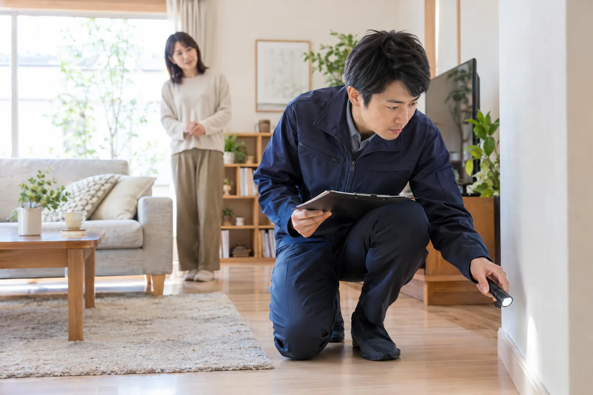
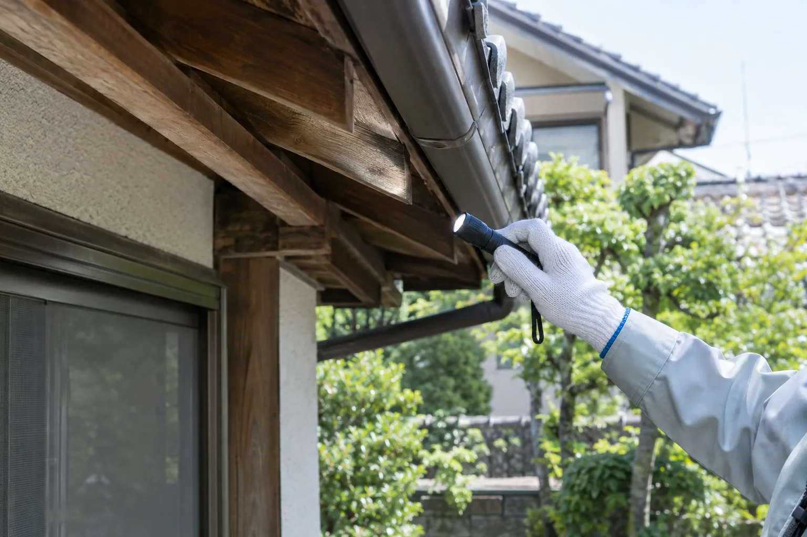
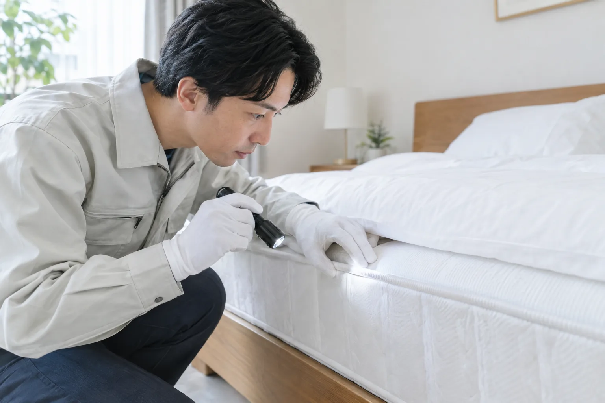
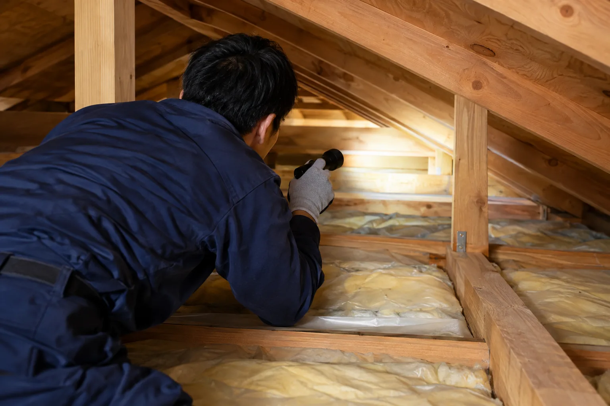

PEST & WILDLIFE CARE
住まいの不安に、
顔の見える安心を。
気になる気配を、ひとつずつ確認。状況を見て、必要なことと費用を分かりやすくご案内します。
無料調査について相談する調査・お見積もり無料 / 東京・神奈川・埼玉・千葉


一つずつ
このページの写真はデザイン確認用に生成したサンプルです。実際のスタッフ・施工事例ではありません。
01まずは状況を確認対象が分からなくてもご相談ください
02費用を事前にご説明内容をご確認いただいてから作業
03調査・見積もり無料ご検討後にお決めいただけます
HOW WE CAN HELP
気になる場所から、
お困りごとをお聞かせください。
写真は対応内容をイメージしやすくするための生成素材です。

01 / BEDBUGS寝室・宿泊施設のお困りごと
トコジラミ駆除
寝具や家具まわりの状況を確認し、作業方法をご案内します。
詳しく見る02 / INSECTS
住宅・施設の虫のお困りごと
カメムシ対策
建物や発生状況を伺い、ご希望に合わせて対策を検討します。
詳しく見る
03 / WILDLIFE天井裏・建物のお困りごと
害獣・ネズミ駆除
足音や気配など、分かる範囲の情報からご相談いただけます。
詳しく見る野生動物は種類や地域によって対応方法が異なるため、現地調査時に確認します。
LOOK CLOSER
BEFORE WE BEGIN
見えないところこそ、
きちんと確かめる。
不安なまま作業を進めるのではなく、まず現状を確認します。調査内容と対応方法、費用をお伝えし、ご納得いただいてから作業を始めます。
ご依頼の流れを見るA SIMPLE PROCESS
相談から作業まで、
わかりやすく。
- 01お問い合わせ気になる状況を分かる範囲でお聞かせください。
- 02無料調査・お見積もり必要な作業と費用をご説明します。
- 03ご検討・作業内容に納得いただいてから進めます。
CLEAR PRICING
費用は、作業前に
きちんとご案内。
対象や状況を確認して、作業内容と費用をご説明します。追加作業が必要な場合も、事前にご相談します。
標準的な駆除作業30万円（税込）
消毒・糞尿の清掃・ゴミ処理は別途お見積もり。対象や状況を確認し、適用範囲をご案内します。
LET'S TALK
気になること、
まずは聞かせてください。
調査・お見積もりは無料です。内容をご確認のうえご検討ください。